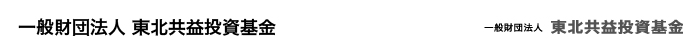

協働復興応援プロジェクト 活動計画
- 1.
- 新しい地場産業モデルの創出支援
新しい地域経済をリードする「共益事業」に積極投資し（資本性のある資金の提供）、コミュニティ新生も視野に入れた地域活動の広がりを目指します。
- 2.
- バリューアップ支援
資金の提供だけではなく、地域固有の価値を発揮できるよう、ノウハウ提供・経営支援でバリューアップを図ります。
- 3.
- 2度の資金循環
「共益経済」の実現に向けて、5年をめどに地元に資本をバトンタッチ、償還された資金を次の課題へ再投資します（NPO等への助成）。
復興を支援する金融ネットワークの構築
東北地域の被災地復興において、金融が地域コミュニティの活力創生に大きな役割を担うべく、マルチ・ステークホルダーによる議論をする場を設定します。
協働復興応援プロジェクト 活動進捗（2012年12月末時点）
宮城
- ・
- 雄勝硯生産販売協同組合
経営課題への支援を進めつつ、専門家等とも積極的に連携しながら、ブランディングから販路開拓に向けての支援も行っています。
- ・
- 佐藤造船所
ドッグの早期再興による修理対応力の強化を図るべく、社外の専門家にも参画いただき、ハンズオンでの経営支援を継続しています。
- ・
- 及川電機
復興需要をより大きく引き受けるための設備拡充に向けて資金面での課題に直面しており、関係機関との協議等の経営支援を続けています。
- ・
- トラスト
亘理郡での電子機器の受託生産サービス（EMS）の製造業生態系構築に向けて、まずは同社の財務再構築や事業の新展開等の経営支援を開始しています。
岩手
- ・
- 釜石ヒカリフーズ
岩手県沿岸部での復興金融を加速させるプログラム“「三陸リアス復興資本」の環”の第一号案件です。事業計画の策定や販路拡大のための関係構築支援を実施しています。
復興起業キャピタル
- ・
- ピースネイチャーラボ
事業計画づくりの支援とともに、燻製商品の市販に向けた取り組みをサポートしています。
エピソード
- ・
- 第一号案件・雄勝硯生産販売協同組合
震災発生前から取り組みを始めていた”硯の食器”という匠の技を活かした新展開、「玄昌石皿」を、伝統産業である雄勝硯を受け継いでいくための収益源の一つとしていく方向です。新たな商品開発により顧客層を拡大すべく、Webサイトでの販売や海外への進出も視野に、積極的な展開を図っていく予定です。また、「伝統」と「新境地」をテーマとして、ブランディングをしていく計画です。
- ・
- 第二号案件・佐藤造船所
震災後初めて進水させた「第八大成丸」船主・津田正隆さんより、「いち早く、『海に出られる』という前向きな気持ちになれました。震災で船を失い、数ヶ月はガレキ処理などに従事していましたが、佐藤造船所の（佐藤）文彦さんから『（佐藤造船所内で被災した）船を直せば使える』と連絡を受けました。佐藤造船所さんの後押しが、とても大きかったです。」
今後の計画について
初年度で、6案件9,600万円の資金提供と経営支援、さらには復興金融ネットワークを構築してきました。本年度（2012年10月～2013年9月期）においては、引き続き、民間資金の機動力を生かし、福島県や東北全域にて積極的に案件を開拓します。具体的には、復旧を超えた新展開を拓いていくための「成長資本」、グループ補助金等では対応できないものへの「追加資本」、二重ローン問題への対応を進める下支えとなる「基盤資本」の3つの展開を、政府機関や各種金融機関等とも連携しながら進めていきます。
また、経営サポートや事業再生、商品開発や販路拡大など、社外の専門家を支援先に派遣し、支援先の皆さんと事業価値を最大化する試みを続けていきます。


{kind=link}